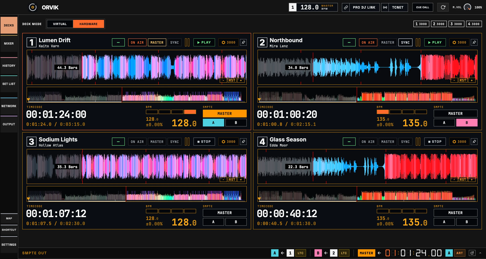
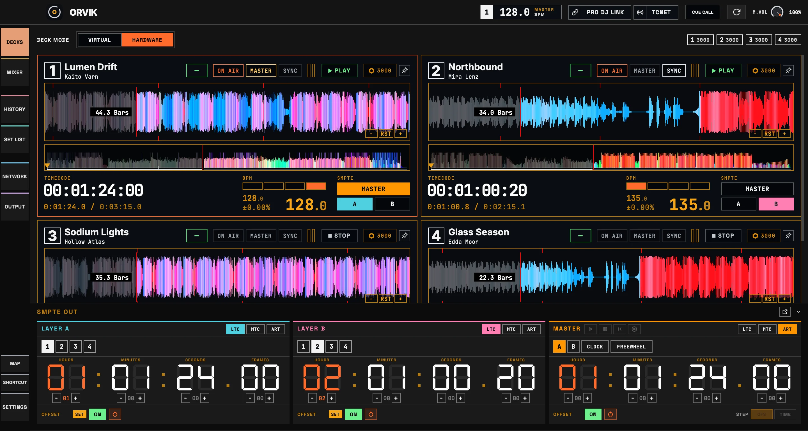
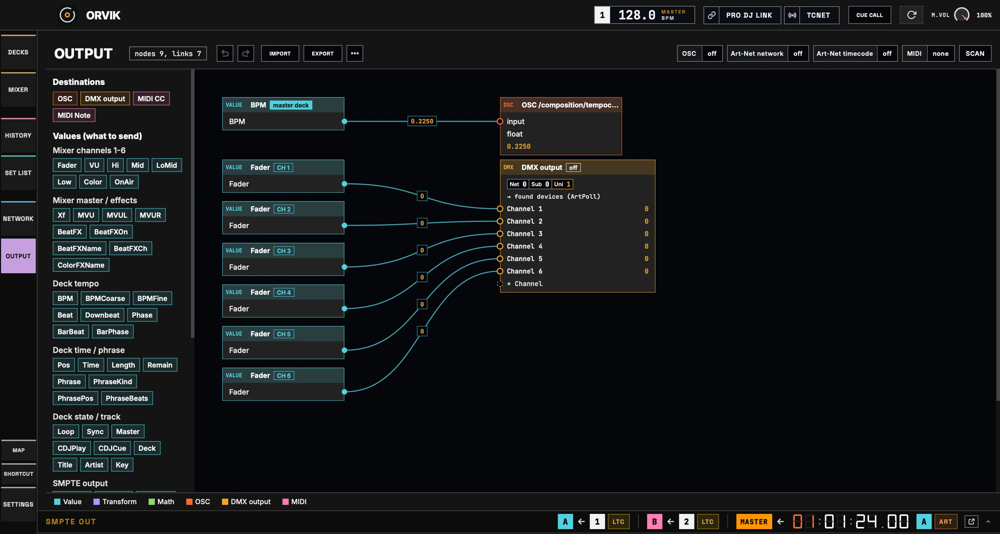
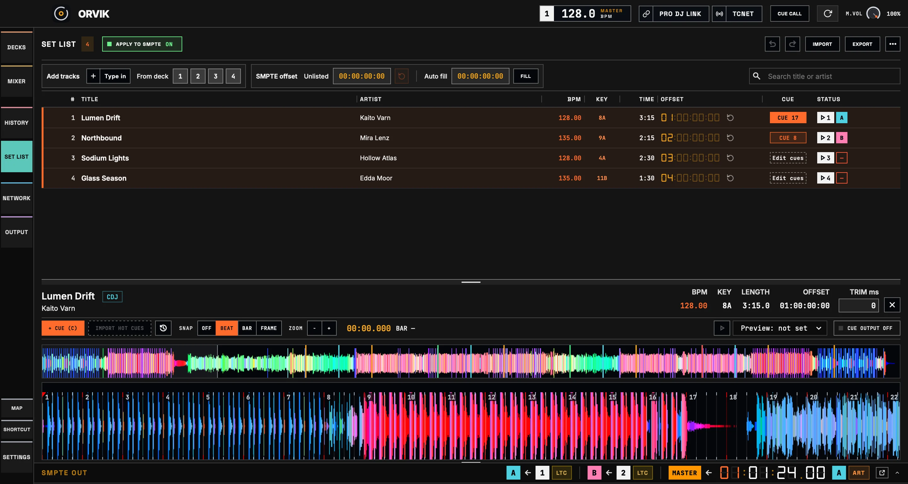
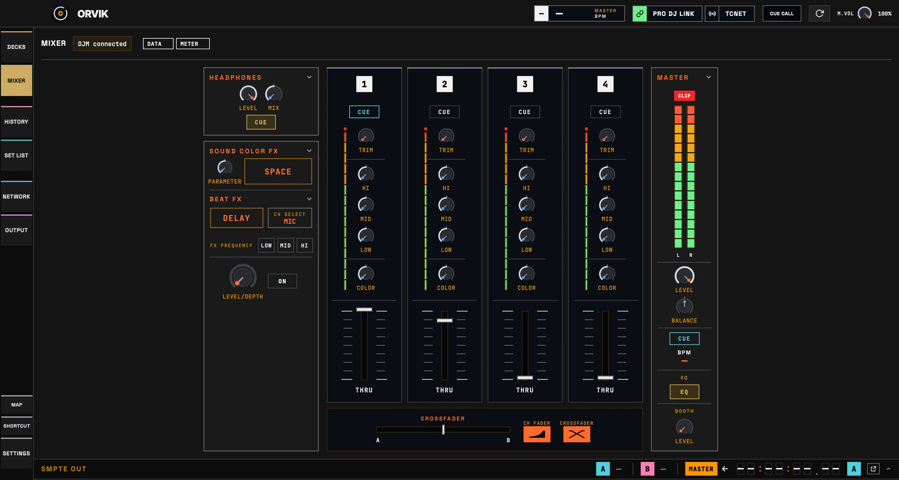
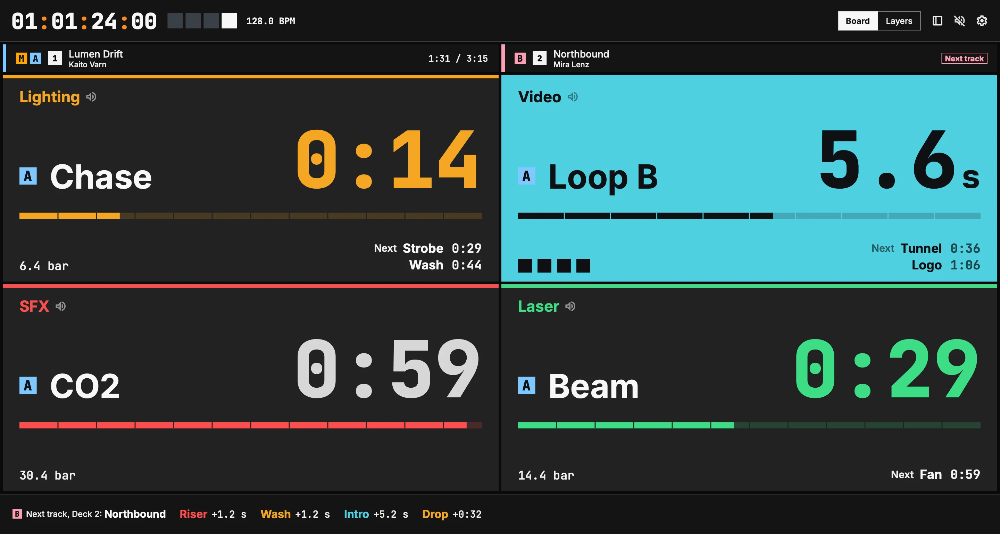
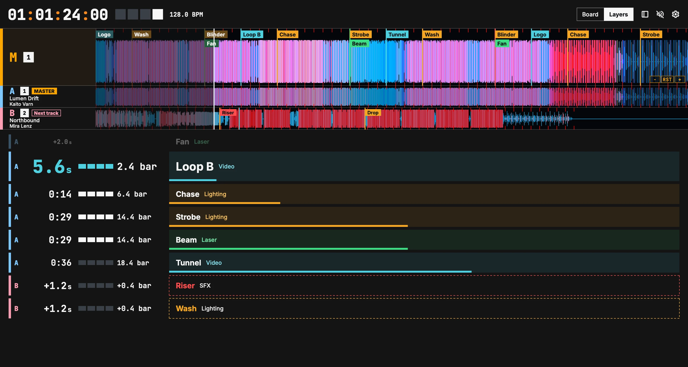

덱에서 모든 수신 장비까지
타임코드, OSC, DMX, MIDI를 페이지마다 따로 설정합니다.




스태프 귀에 들리는 큐 콜
- 그룹별 다음 큐와 남은 시간.
- 음성 안내: 스탠바이, 셋, 둘, 하나, 고.
- 같은 카운트다운을 폰에서 /cuecall로.

호환 장비와 환경
- 테스트한 장비
- CDJ-3000X, CDJ-3000, CDJ-2000NXS2, DJM-V10, DJM-900NXS2
- 보내는 신호
- TCNet, LTC, MTC, Art-Net 타임코드, OSC, DMX(Art-Net, sACN), MIDI
- 받는 입력
- 키보드, MIDI, OSC(UDP 7700), Art-Net DMX(UDP 6454)
- 운영체제
- Apple Silicon의 macOS 13.3 이상, Windows 10, 11(x64)
- 인터넷
- 사용 데이터를 보내지 않습니다. 업데이트 확인은 앱 버전으로 GitHub에 묻고, 끌 수 있습니다.
그 밖의 장비는 아직 테스트하지 않았습니다. 결과는 Issues에 알려 주세요.
